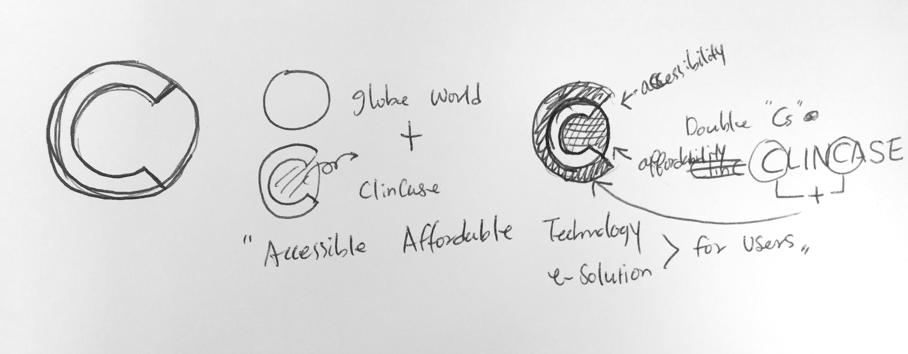
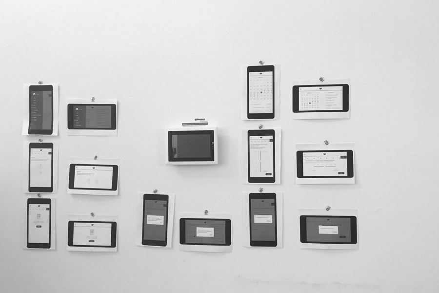
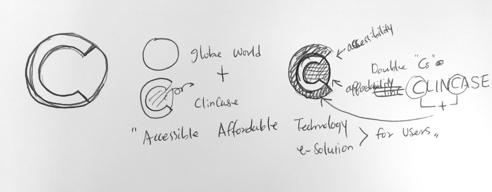
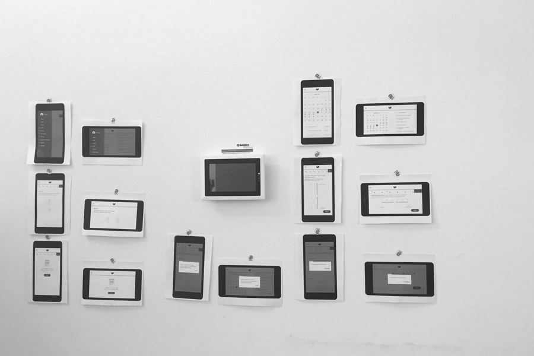

Product Design Internship in Berlin, Germany
This past summer in 2017, I had a fantastic experience working with the best team at Clincase in Berlin, Germany. My responsibilities at Clincase were product design, visual design, usability research for their own products: EPRO and EDC 3.0 for clinical trial case studies. The potential users for the specific products were patients or regular people who volunteered to participate in clinical trial studies. Therefore, all the design decisions we made must go through validation process by European Medicines Agency (EMA). Under strict regulations, our missions were transferring existing paper documents to digital formats. In the mean time, we also had to make sure the product provide pleasant and delightful experience for patients.
User Experience / User Interface / End-to-End Experience Design / Visual Design / User Research
Logo Refinement: The very first task I did at Clincase was the logo refinement. I made sure its clearity on digital platforms.
Color: Since every single design decision was required a strict validation process by EMA, we had to make sure the syles keep its simplicity for patients. For this reason, we chose minimal color palette. The bluish turquoise and teal are associated with meanings of calming, serenity, emotional balance, and tranquility.
 




Userflow & Persona: Firstly, we created userflow and three different personas to understand needs and the .